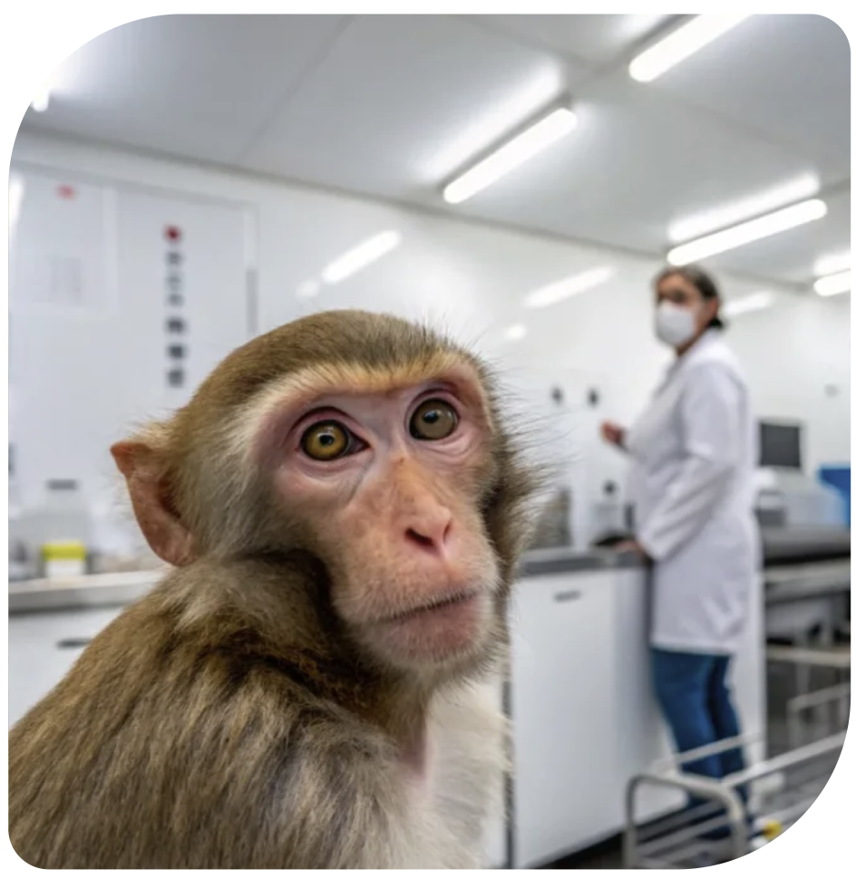

VOOR EEN TOEKOMST ZONDER DIERPROEVEN
versnellen de overstap naar mensgerichte wetenschap. Help onderzoekers kiezen voor betere alternatieven - zonder proefdieren.
ONZE MISSIE
Dierproeven zijn niet alleen ingrijpend, ze voorspellen vaak onvoldoende wat een behandeling bij mensen doet. Daarom verbinden we onderzoekers, vernieuwers en publiek rond betere modellen.
onderzoekers wil anders werken
geïnvesteerd in alternatieven
in beweging voor dieren